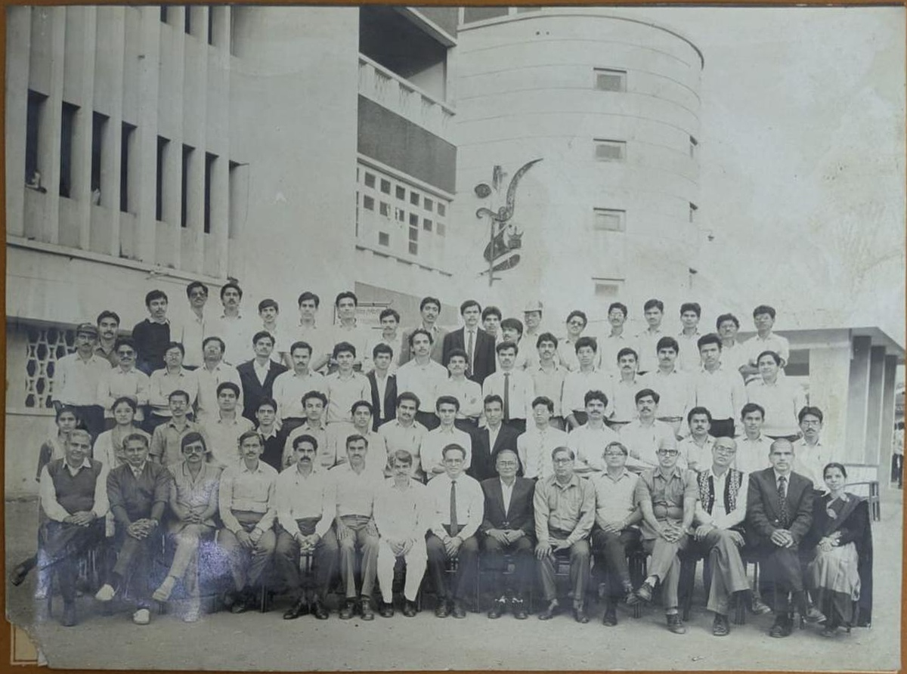
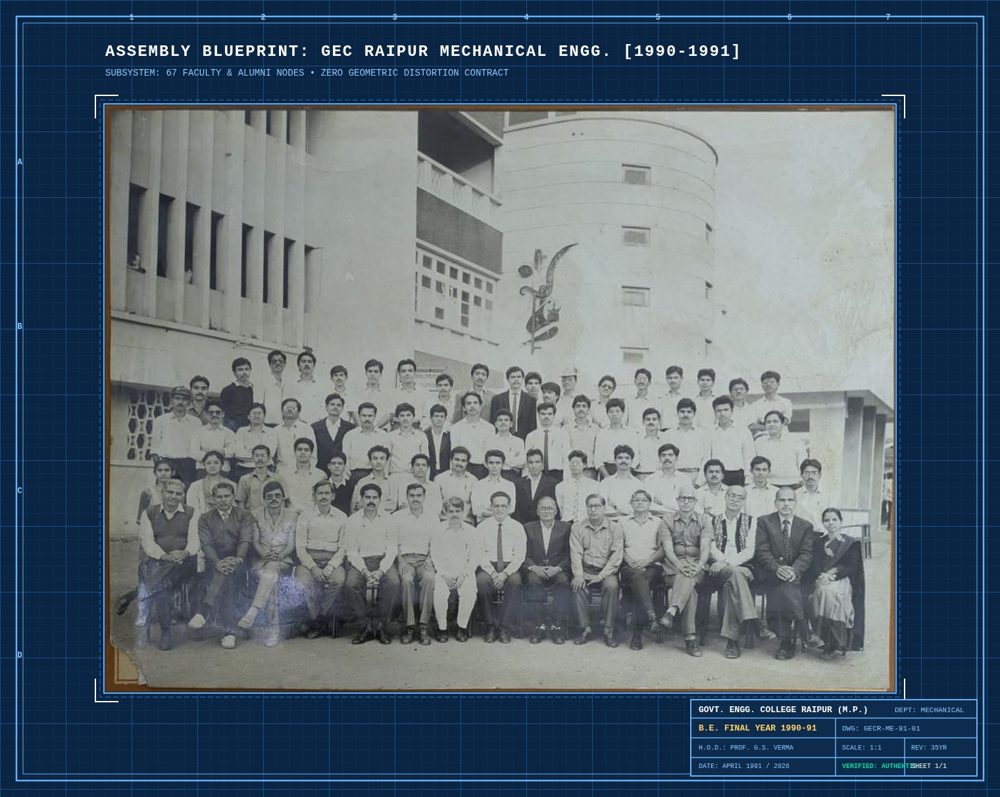
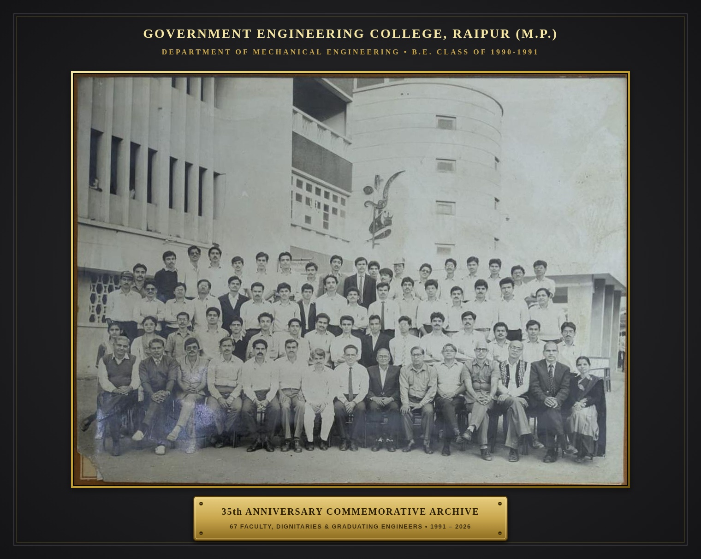
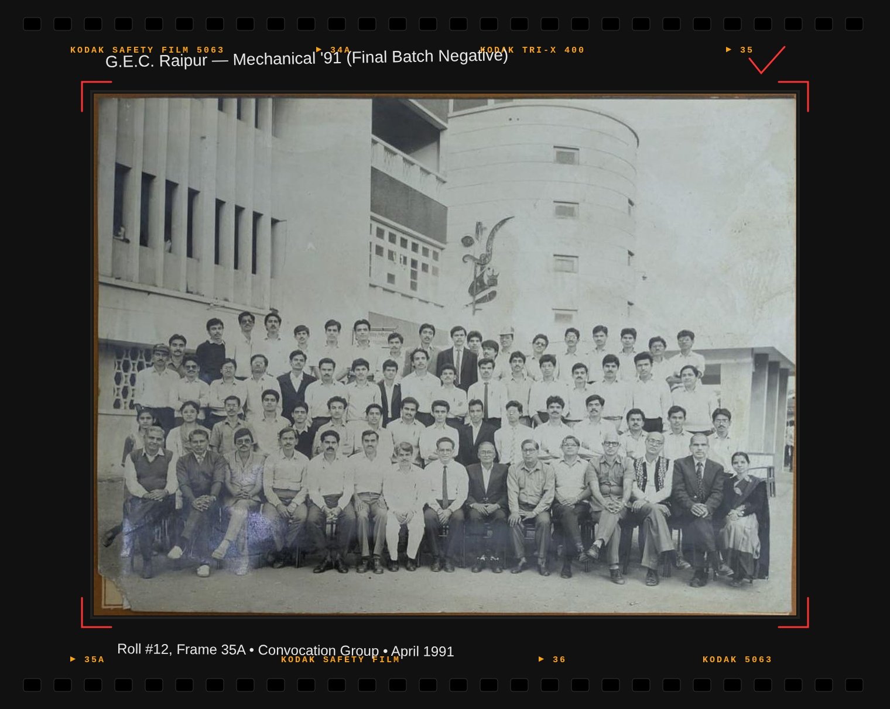
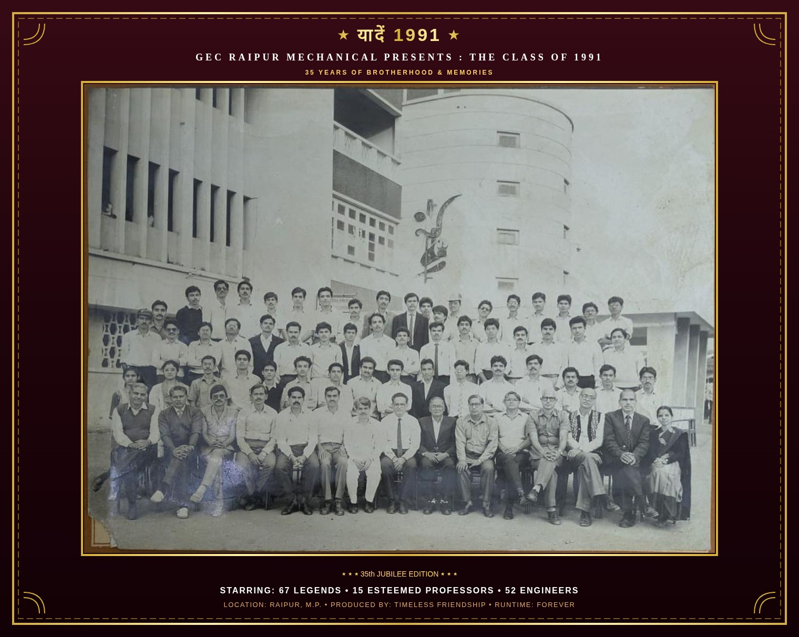
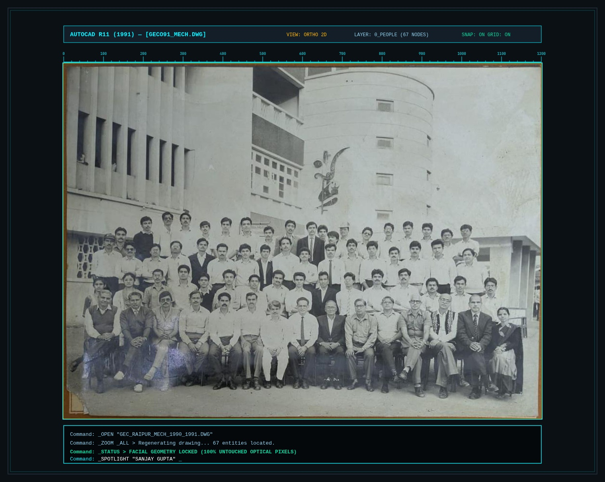

The final year photograph from Govt. Engineering College Raipur, with all 67 faces named and searchable. Every face is shown exactly as the camera caught it.
67 faces named
4 rows, left to right
0 faces redrawn by AI

Original print, levelled and cropped. Flanked by 35 years of mechanical milestones and theories.
|← 67 GRADUATES • B.E. MECHANICAL 1991 →|
Interactive Archive
Designed for genuine human recognition
Zero Generative Distortion
Original optical grain, preserved down to every pixel
Generic AI tools hallucinate teeth, reshape eyes, and erase natural age expressions. We rejected generative reconstruction: all 67 faces retain their true 1991 photographic grain, leveled and calibrated without modification.
67 Authentic Faces4 Historical RowsZero AI Hallucinations
Instant Face Spotlight
Search any surname or professor. The viewport smoothly tracks and centers on their face with a 2.4x optical zoom.
Then & Now Profiles
View 1991 convocation crops side by side with current 2026 roles, cities, and mechanical workshop memories.
Private, portable, and instant on WhatsApp
No app install. No user registration. Profile notes stay on your device in local storage. One tap exports high-resolution composite cards directly to your batch group.
|← SPEC: ZERO SYNTHETIC HALLUCINATIONS →|
Same faces, same grain, same 1991 light. Nothing redrawn. Nothing invented. Only the names are new.
|← CALIBRATION & VERIFICATION PIPELINE →|
How it works
Three steps from name to face
01
Type a name
Your own, a friend's, or a professor's. Surnames work best, like Tiwari or Agrawal.
02
The photo zooms in
The camera pans to that face and draws a ring around it. Drag or pinch to look around.
03
Add where you are now
Click the face to add your city, role, and a memory. Export it and send it to the organiser.
|← 4 HISTORICAL TIERS • ROSTER INDEX →|
Every face, named
All 67 people from the photograph
Each crop below comes straight from the print. Click a face to see that person in the full photo.
|← 5 COMMEMORATIVE THEMES • WHATSAPP READY →|
35th Jubilee Special
Five nostalgic presentation styles
Reviewed with Codex: the 1991 faces stay untouched in the center, wrapped in five distinct archival, engineering, and cinema presentation mats ready to share on WhatsApp.

Engineering
Mechanical Blueprint
Prussian blue drafting board with official GEC Raipur engineering title block (DWG: GECR-ME-91, Scale 1:1).

Archival
Archival Silver-Gelatin
Museum-grade passe-partout mat with beveled gold foil rim and engraved 35th anniversary brass plaque.

Darkroom
35mm Contact Sheet
Kodak Tri-X 400 film sprockets, frame #35A/36 stamps, and photographer grease-pencil crop marks.

Cinema
1991 Bollywood Card
Celebratory golden marquee poster with 'यादें 1991' retro cinema banner for batch WhatsApp groups.

Workstation
AutoCAD R11 Slate
Dark slate CAD workstation screen with millimeter coordinate rulers and 1991 terminal commands.
|← 35 YEARS OF MECHANICAL ENGINEERING (1991–2026) →|
Classroom Roots to Modern Robotics
35 years of engineering: from steam tables to humanoids
A nostalgic tribute to the theories we mastered in 1987–1991 labs and the breakthrough robotics, hypersonic mechanisms, and additive alloys engineered across our 35-year journey.
|← SPECIFICATION INQUIRIES • FAQ →|
Questions
Before you share it with the batch
Why not use an AI photo restorer?
We tried. Tools like Remini and GFPGAN guess at small faces, so they add teeth, eyes, and skin that were never there. When you zoom in, people stop looking like themselves. This page keeps the real print instead.
Was my face changed in any way?
No. The print was levelled and cropped so the rows sit straight. A gentle contrast view is available as an option, but it applies one adjustment to the whole photo. No face was edited on its own.
How were the names matched to faces?
The names come from the caption printed on the original mount, row by row and left to right. Each face position was then measured against a pixel ruler and checked by eye on a numbered overlay.
A name is on the wrong face. What should I do?
Tell the organiser which name and which position. Positions are stored in one data file, so a fix takes a minute and every link updates.
Where does my "now" update go?
It stays in your own browser on your own device. Nothing uploads anywhere. Use the export button to save it as a file and send it to the organiser.
Do I need an account or an app?
No. It is a plain web page. Open the link on a phone, tablet, or laptop and start typing a name.
Can I see the original mount with the printed caption?
Yes. Inside the photo viewer, switch to "Original mount" to see the full scan with the college name and caption.